樹状整列は、Forest形式のテキストファイルを読み込み、複数の木構造を段階的に整列して表示する Pythonデスクトップアプリケーションである。実行には miseを使用する。
最初に、miseが利用できることを確認する。
mise --version
アプリケーションの操作コマンドは、リポジトリ直下のSEForestと、
Python実装を置くSEForest/Forest_Programのどちらからでも実行できる。
以下のいずれかへ移動してから、同じmiseコマンドを使用する。
| 場所 | 移動例 | 補足 |
|---|---|---|
| リポジトリ直下 | cd SEForest |
Pythonアプリと文書の統合タスクを使用できる。 |
| Python実装内 | cd SEForest/Forest_Program |
Pythonアプリのタスクを直接使用できる。 |
使用するディレクトリで、Pythonとuvを準備し、依存関係をインストールする。
mise install
mise setup
リポジトリ直下でmise setupを実行した場合は、Pythonアプリに加えて文書表示に必要な
Bunパッケージも準備される。Forest_Program内ではPythonアプリの依存関係だけが準備される。
開発中のアプリケーションを起動する。
mise devmacOS用アプリケーションを作成する場合は、次のコマンドを実行する。
mise buildビルド済みのmacOSアプリケーションを開く。
mise previewアプリケーションを終了するには、ウィンドウ左上の閉じるボタンを押す。
起動直後は、キャンバス中央にファイル選択の案内が表示される。Forest形式のテキストファイルを ウィンドウへドロップするか、キャンバスをクリックしてファイル選択画面を開く。
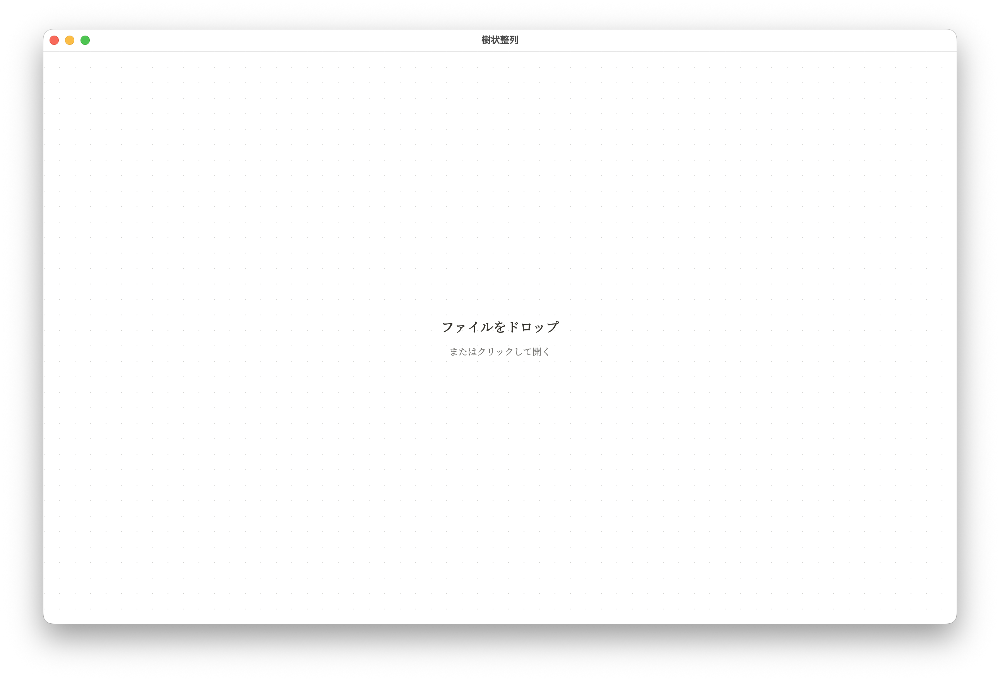
ファイル選択画面では、読み込む.txtファイルを選択して「開く」を押す。
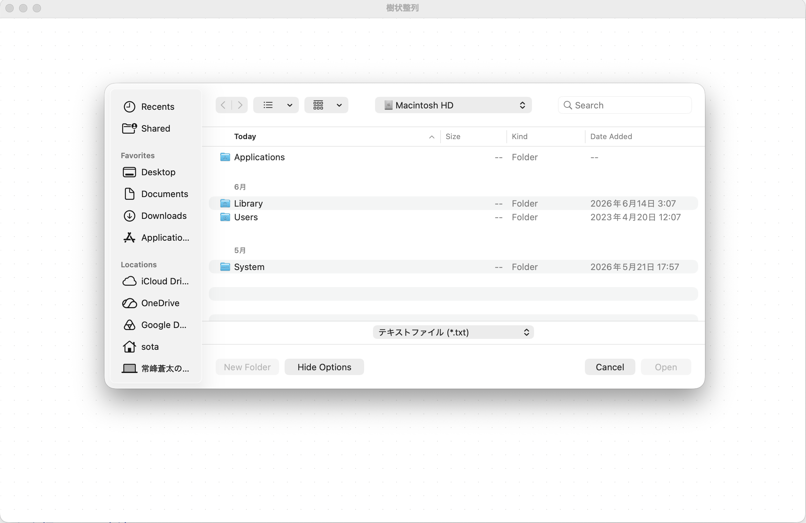
ファイルを読み込むと、解析されたノードが初期位置へ表示される。画面下中央の再生ボタンと工程表示、 右下の工程表示から、現在位置と総工程数を確認できる。
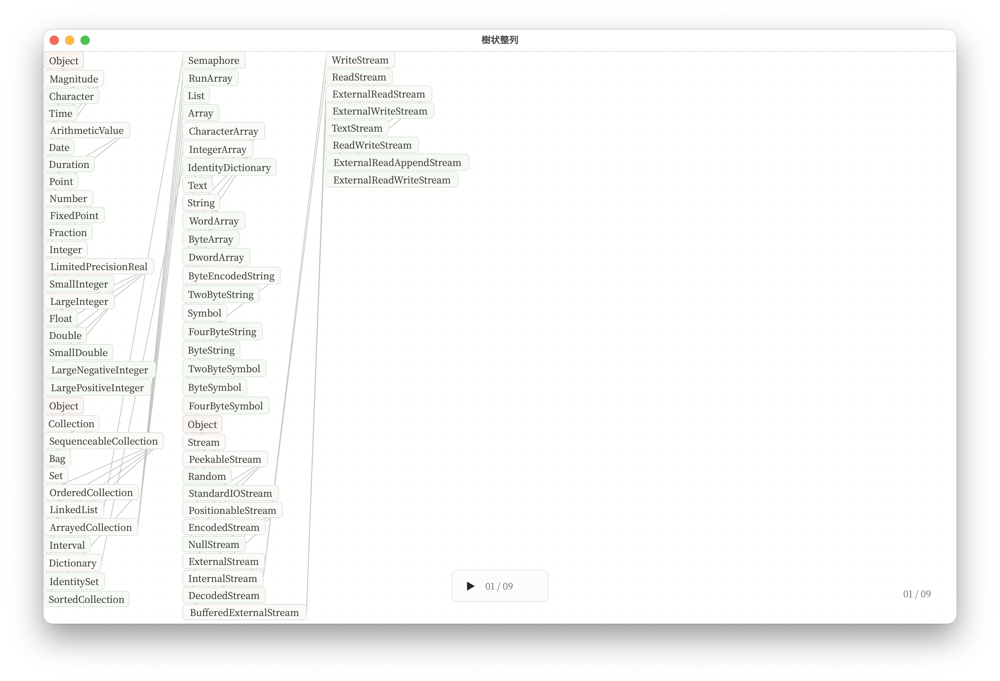
「▶」を押すと、ノードが最終位置へ移動する工程を順番に再生する。再生中の「Ⅱ」を押すと一時停止できる。
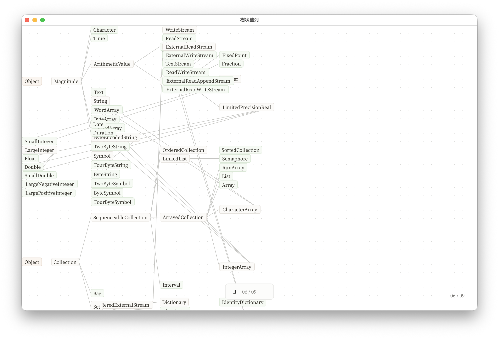
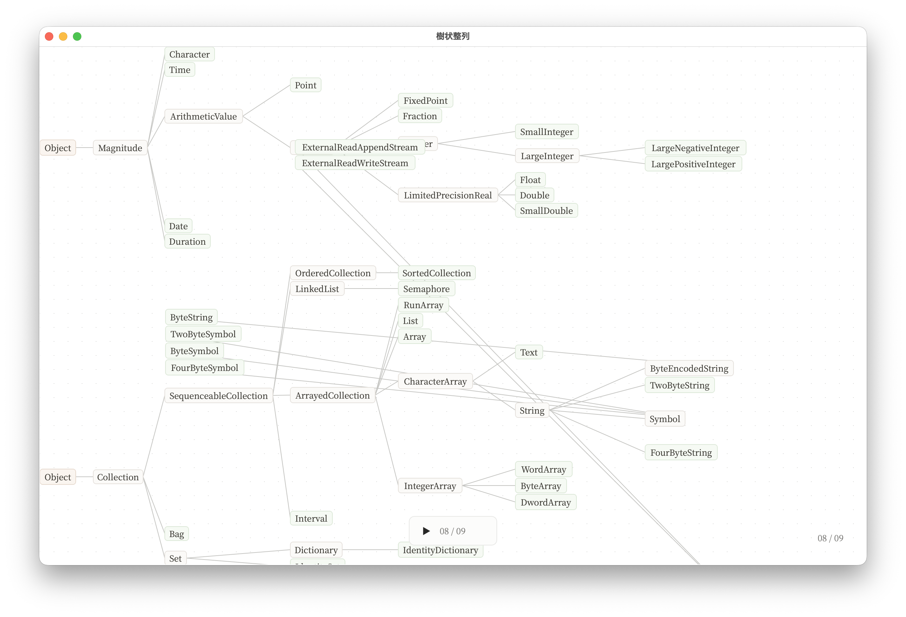
最終工程まで進むと、木構造の整列が完了する。完了後に再び「▶」を押すと、現在のノード名を保持したまま 初期工程から再生できる。
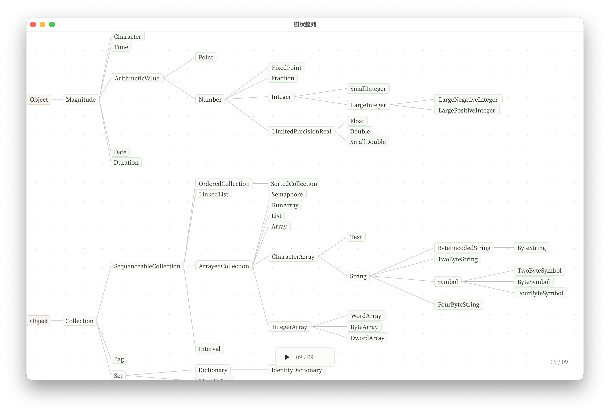
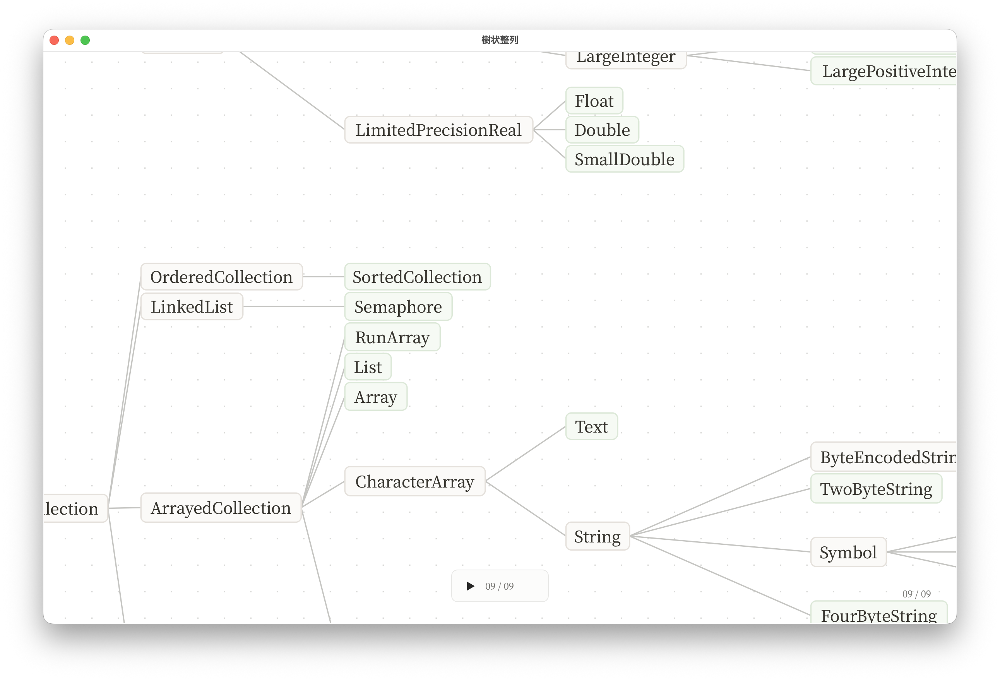
ノードをクリックすると、そのノードが選択色になり、編集ポップアップが開く。入力欄へ新しい名前を入力し、 ReturnまたはEnterを押すと変更を確定する。「×」またはEscapeを押すと変更を取り消す。
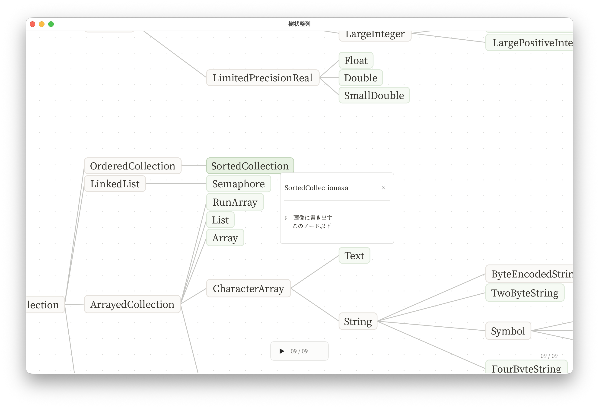
名称を確定すると、文字列の大きさに合わせてノードと木構造が再配置される。
ノード編集ポップアップの「画像に書き出す このノード以下」を押すと、選択したノードを起点とする 部分グラフをPNG画像として保存できる。保存先とファイル名を指定して「保存」を押す。
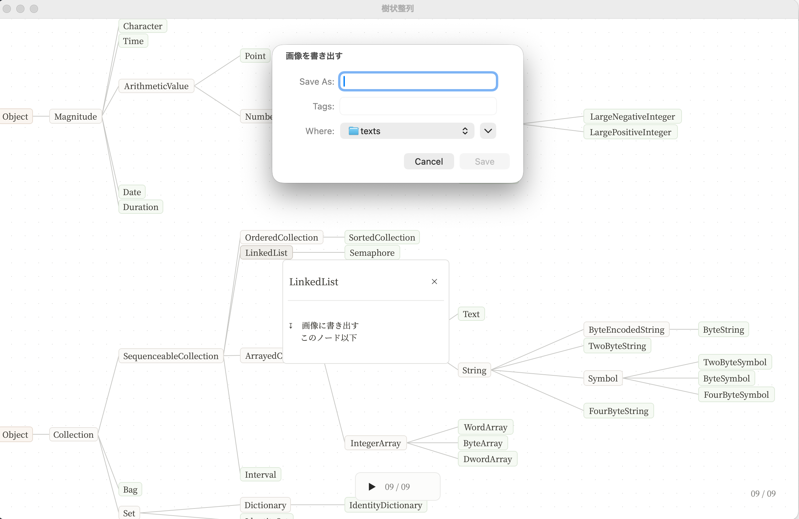
ノード以外の場所を右クリック、またはCtrlを押しながら左クリックすると、キャンバスメニューが開く。 通常の左クリックではメニューは開かない。
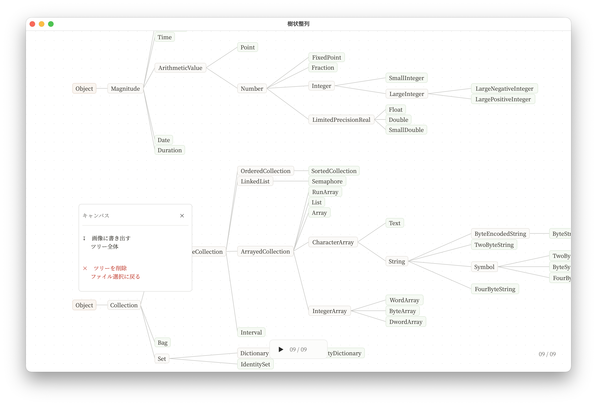
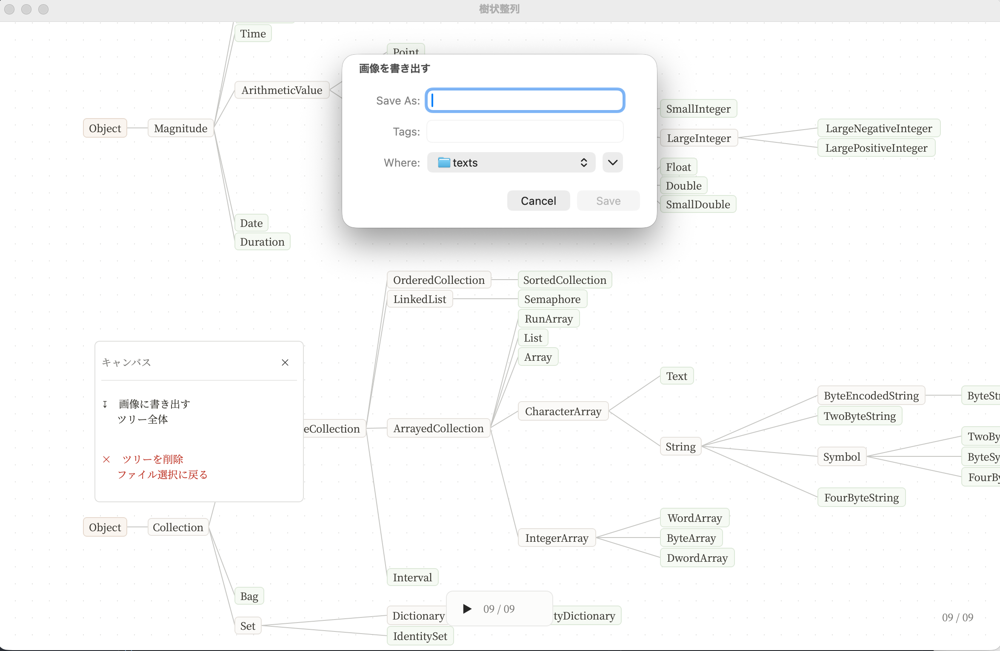
| 状態 | 対処 |
|---|---|
miseが見つからない |
miseをインストールし、新しいターミナルでmise --versionを確認する。
|
| 依存ライブラリを読み込めない |
実行中のディレクトリでmise installとmise setupを再実行する。
|
| ツリーが表示されない |
Forest形式の.txtファイルを選択しているか確認する。
|
| 拡大縮小できない | Ctrl+ホイール、またはトラックパッドのピンチ操作を使用する。 |